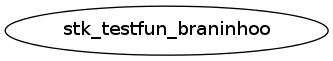

Master index
Index for examples/test_functions
Dependency Graph for examples/test_functions

Generated on Mon 04-Feb-2013 16:49:20 by
m2html
© 2005
 Master index
Master index Master index
Master index